🌿 Keyur's Plant Dashboard
A field guide to keeping 11 plants alive (and identifying which one is mad at you today)
📅 Last updated: 30 Aug 2026
📸
How to add progress photos ·
Tracks your real plants over time and tells you what you're probably doing wrong.
- Take new photos of any plants you want diagnosed (partial updates are fine).
- Save them into a new dated folder
plants/private/history/YYYY-MM-DD/ using the same filenames as the originals (e.g. 09-peace-lily.jpg, 11-aphelandra.jpg).
- Ask Claude:
/plant-tracker or say "check on my plants".
🔒 Privacy note: This dashboard shows your real plant photos, each with the background blurred out, resized, and stripped of EXIF metadata (the originals carried GPS coordinates of the house). Full-resolution originals stay in plants/private/, which is gitignored and never published — put any new photo through the same three steps before committing it.
🚑 Aphelandra rescue — act now: Down to a bare woody stem with 2–3 leaves at the tip. Scratch the stem with a fingernail: green underneath = alive, brown and dry all through = gone. If alive, cut it back to 2–3 nodes using the Bushy Pot method below and propagate the piece you remove. It has been leggy since May and will not recover on its own.
💧 Quick Watering Schedule
Sorted by how often they need water. The #1 cause of plant death is overwatering — when in doubt, wait a day.
| Plant |
Water Every |
How to Check |
Frequency |
Difficulty |
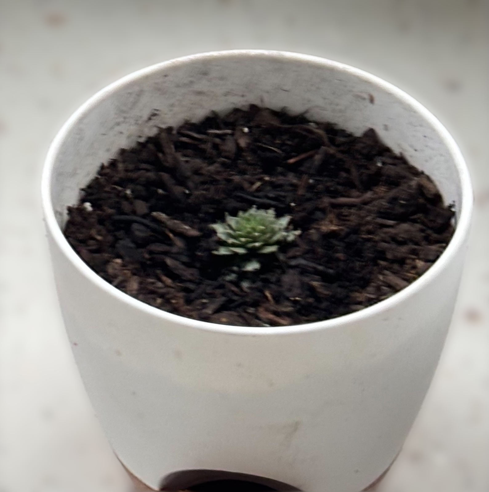 🐣'">Sempervivum (Hens and Chicks) |
14–21 days |
Soil bone dry; never wet the rosette center |
Low |
Easy |
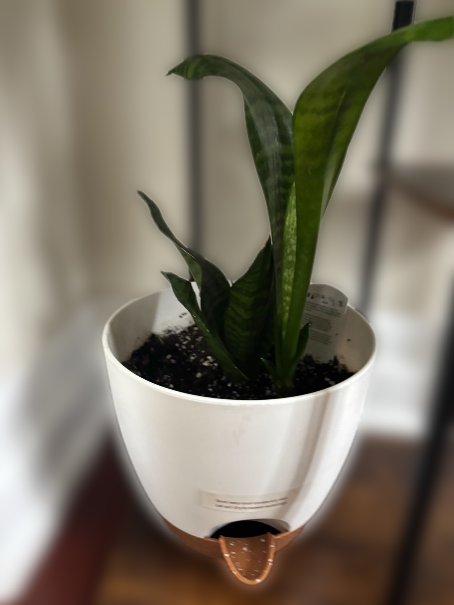 🐍'">Snake Plant (large) |
14–21 days |
Soil bone dry, leaves still firm |
Low |
Easy |
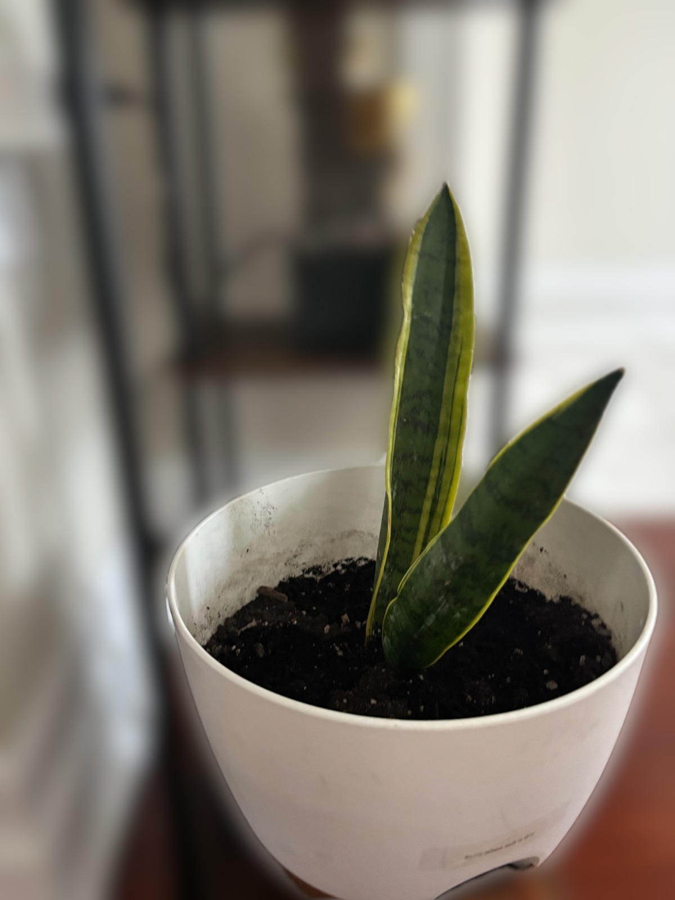 🐍'">Snake Plant (small) |
10–14 days |
Soil bone dry |
Low |
Easy |
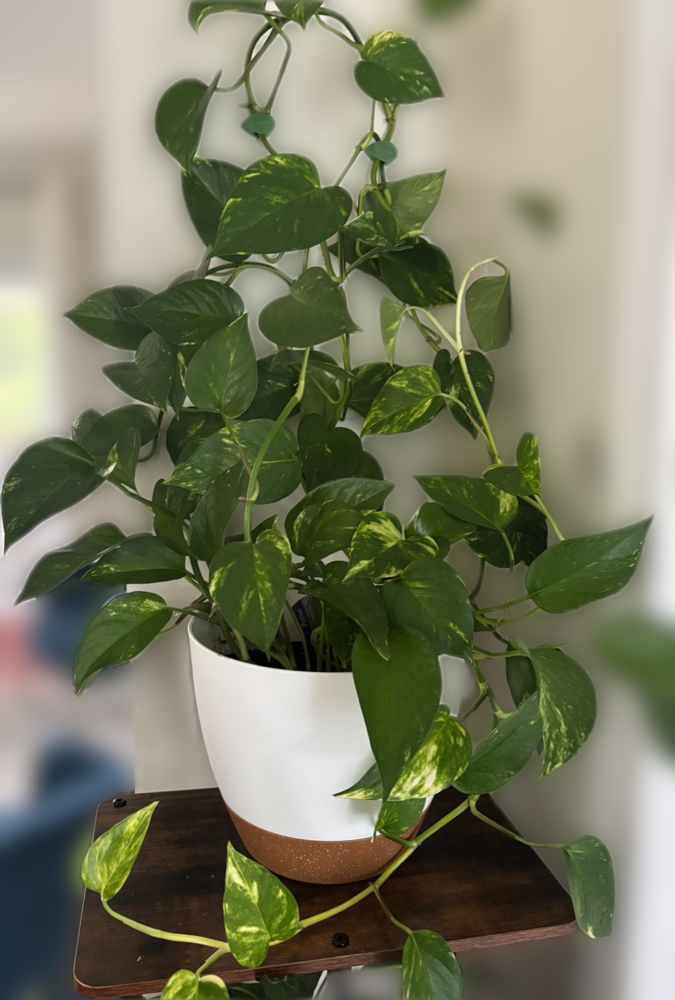 💛'">Golden Pothos |
7–14 days |
Top 2 inches dry, leaves slightly droopy |
Low |
Easy |
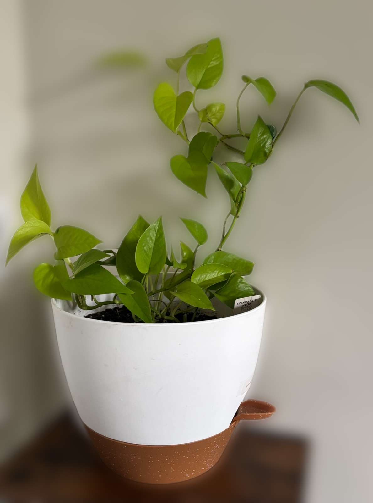 💚'">Neon Pothos |
7–14 days |
Top 2 inches dry |
Low |
Easy |
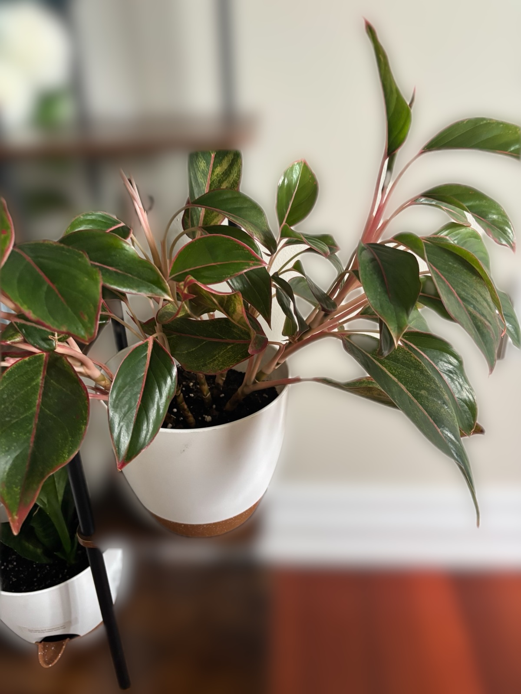 🌹'">Red Aglaonema |
7–10 days |
Top inch dry |
Medium |
Easy |
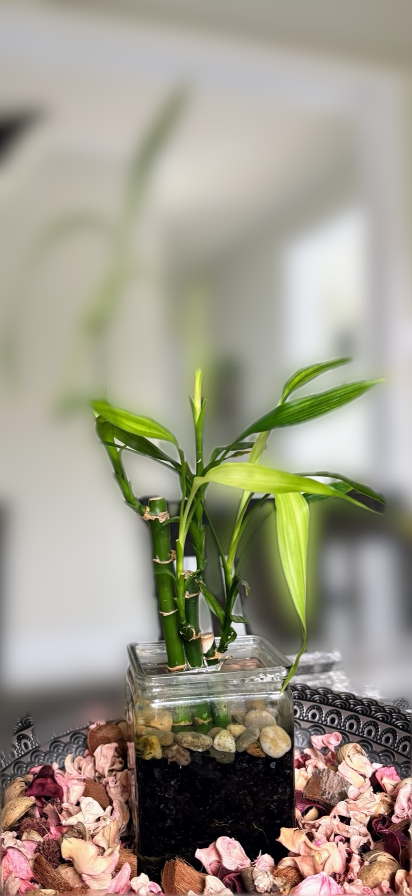 🎋'">Lucky Bamboo (in water) |
7–14 days |
Replace the water entirely; distilled only |
Low |
Easy |
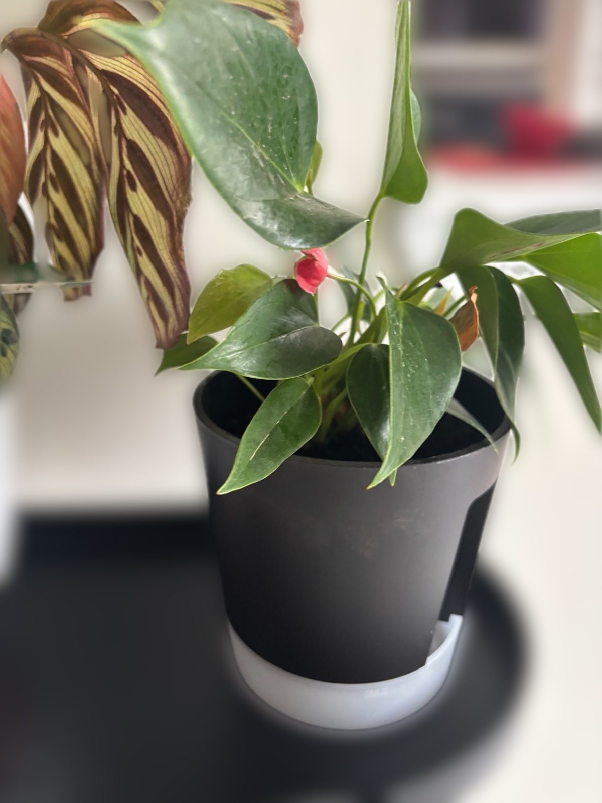 ❤️'">Anthurium |
7–10 days |
Top inch dry; loves humidity |
Medium |
Medium |
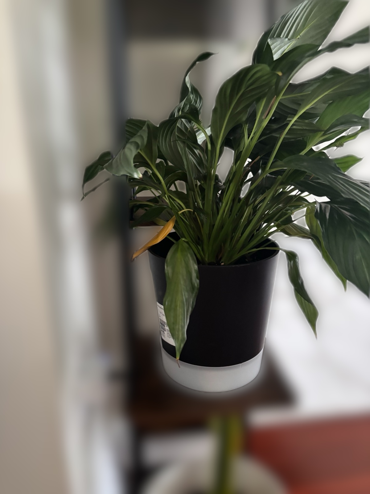 ☮️'">Peace Lily |
7–10 days |
Will visibly droop when thirsty 👇 |
Medium |
Easy |
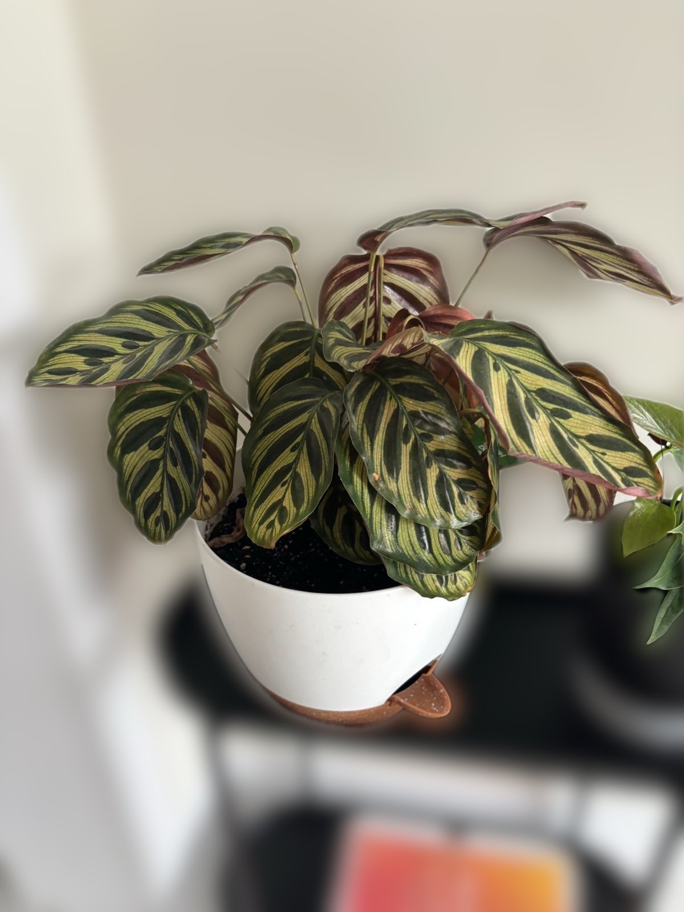 🦚'">Calathea Makoyana |
5–7 days |
Top inch dry; use filtered/distilled water |
High |
Hard |
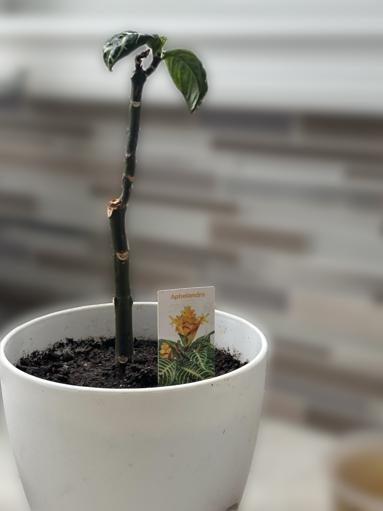 🦓'">Aphelandra (Zebra) 🚑 |
5–7 days |
Keep soil consistently moist (not soggy) |
High |
Hard |
🪴 Plant Profiles
📸 Save photo as
plants/02-calathea.jpg
'">
🦚 1. Calathea Makoyana (Peacock Plant)
Goeppertia makoyana
High Water
Difficulty 5/5
💧 Water
Every 5–7 days. Must use filtered or distilled water — tap water fluoride burns the leaf edges brown.
☀️ Light
Medium indirect ONLY. Direct sun fades the patterns.
💨 Humidity
Loves it. Pebble tray or pair near another plant.
🥵Underwatered: Crispy brown leaf edges, curling.
💦Overwatered: Yellow lower leaves, mushy stems.
Fun fact: A "prayer plant" — leaves fold up at night and unfurl at sunrise. You can literally watch it move. Sit with a coffee at dusk and you'll see it happen.
📸 Save photo as
plants/03-anthurium.jpg
'">
❤️ 2. Anthurium (Flamingo Flower)
Anthurium andraeanum
Med Water
Difficulty 3/5
💧 Water
Every 7–10 days; top inch dry. Likes humidity — mist 2× a week.
☀️ Light
Bright indirect. No direct sun (burns the red).
🌺 Blooms
Year-round if happy. Each "flower" lasts 6–8 weeks.
🥵Underwatered: Drooping leaves, fewer flowers.
💦Overwatered: Yellow leaves, black roots, flower stems collapse.
Fun fact: The red "flower" isn't a flower at all — it's a modified leaf (a spathe). The actual flower is the little yellow spike sticking out of it. Plant marketing scam, basically.
📸 Save photo as
plants/04-pothos-golden.jpg
'">
💛 3. Golden Pothos
Epipremnum aureum
Low Water
Difficulty 1/5
💧 Water
Every 7–14 days. Let soil dry between waterings — this plant prefers neglect.
☀️ Light
Anywhere. Low light to bright indirect. Survives in dark hallways.
✂️ Care
Snip a vine, stick in water, get a new plant. Free plants forever.
🥵Underwatered: Leaves droop dramatically — bounces back within hours.
💦Overwatered: Yellow mushy leaves, black stems near the base.
Fun fact: Nicknamed "devil's ivy" because it stays green in the dark and is nearly impossible to kill. In the wild, its leaves can grow 3 feet wide. Your starter plant.
📸 Save photo as
plants/05-aglaonema.jpg
'">
🌹 4. Red Aglaonema 'Siam Aurora'
Aglaonema commutatum
Med Water
Difficulty 2/5
💧 Water
Every 7–10 days; top inch dry. Forgiving if you forget.
☀️ Light
Medium indirect — more light = brighter pink edges. Too dark and color fades.
🌡️ Temp
Hates cold drafts. Keep above 60°F (16°C).
🥵Underwatered: Drooping, curling leaves.
💦Overwatered: Yellow leaves, root rot.
Fun fact: Considered a lucky plant in Asia — given as a housewarming gift to bring fortune. Yours is the "Siam Aurora" variety, named after the Thai capital region where it was bred.
📸 Save photo as
plants/06-snake-large.jpg
'">
🐍 5. Snake Plant (Larger, self-watering pot)
Dracaena trifasciata (formerly Sansevieria)
Low Water
Difficulty 1/5
💧 Water
Every 2–3 weeks. Soil must be BONE dry. The pot label says "Let soil dry between waterings" — listen to it.
☀️ Light
Anything from low to bright. Genuinely doesn't care.
🚨 Killer
OVERWATERING. 90% of snake plant deaths. When unsure — don't water.
🥵Underwatered: Leaves wrinkle slightly (rare — takes months).
💦Overwatered: Mushy yellow base, leaves fall over.
Fun fact: NASA studied it for air purification on the space station. One of the few plants that releases oxygen at night — perfect bedroom plant.
📸 Save photo as
plants/07-pothos-neon.jpg
'">
💚 6. Neon Pothos
Epipremnum aureum 'Neon'
Low Water
Difficulty 1/5
💧 Water
Every 7–14 days. Same as Golden Pothos — basically unkillable.
☀️ Light
Medium to bright indirect. More light = neon-er. Low light = duller green.
✂️ Propagation
Cut a vine below a node, put in water for 2 weeks, plant in soil. Done.
🥵Underwatered: Leaves droop limp.
💦Overwatered: Yellow leaves, mushy stems.
Fun fact: New leaves emerge a bright chartreuse-yellow and slowly deepen to lime green. The brightest part of your plant is always the freshest growth.
📸 Save photo as
plants/09-peace-lily.jpg
'">
☮️ 7. Peace Lily
Spathiphyllum wallisii
Med Water
Difficulty 2/5
💧 Water
Every 7–10 days OR when she droops — peace lilies literally tell you when they're thirsty.
☀️ Light
Low to medium indirect. Tolerates dim rooms better than most plants.
🍂 Yellow flowers?
Yours has some yellowing spathes — normal! Older blooms turn yellow then brown. Snip them off at the base.
🥵Underwatered: Whole plant dramatically droops — fully recovers within 2 hours of watering.
💦Overwatered: Yellow leaves all over, no flowers, mushy base.
Fun fact: The drama queen of houseplants. She'll faint into the most pathetic droop possible to guilt you into watering, then perk back up like nothing happened. The only plant that communicates clearly.
📸 Save photo as
plants/10-snake-small.jpg
'">
🐍 8. Snake Plant (Smaller, two blades)
Dracaena trifasciata 'Laurentii'
Low Water
Difficulty 1/5
💧 Water
Every 10–14 days (smaller pot dries faster than the big one). Still let it go fully dry.
☀️ Light
Anywhere. Bright light grows it faster.
👶 Babies
It'll send out "pups" (baby plants) from the soil. Separate and repot when 4+ inches tall.
🥵Underwatered: Leaves wrinkle slightly.
💦Overwatered: Soft mushy base, leaves topple.
Fun fact: The yellow edges (variegation) on this variety can disappear if you propagate via leaf cuttings — only division keeps the gold. Plant genetics flex.
📸 Save photo as
plants/11-aphelandra.jpg
'">
🦓 9. Aphelandra (Zebra Plant)
Aphelandra squarrosa
High Water
Difficulty 4/5
🚑 On Watch
🩺 Status
Critical. Bare woody stem, 2–3 leaves left at the tip. Leggy since May and still declining — prune now (see the Bushy Pot card below) or lose it.
✅ Alive if
Stem is green under a fingernail scratch. Expect new shoots 2–4 weeks after cutting back.
❌ Dead if
Stem is shrivelled, hollow, or brown all the way through; no shoots 4+ weeks after pruning.
💧 Water
Every 5–7 days. Soil should stay consistently moist — neither swampy nor dry.
☀️ Light
Bright indirect. Direct sun scorches the leaves.
💨 Humidity
Very high (60%+). Bathroom or kitchen ideal.
✂️ Fix
Prune the top to force bushy regrowth. Losing lower leaves is typical for the species, but this one is well past that — see the reference card below.
🥵Underwatered: Lower leaves drop fast — Aphelandras are dramatic.
💦Overwatered: Wilting despite wet soil, brown leaf tips.
Fun fact: When happy, it produces a bright yellow cone-shaped flower spike that lasts up to 6 weeks. The "zebra stripes" are the white leaf veins glowing against the dark green.
📸 Save photo as
plants/12-sempervivum.jpg
'">
🐣 10. Sempervivum (Hens and Chicks)
Sempervivum ciliosum
Low Water
Difficulty 1/5
💧 Water
Every 14–21 days; let soil dry out completely. Water the soil only — never the rosette center, or the crown rots.
☀️ Light
Full sun to very bright light. Needs several hours of direct sun a day or it stretches and loses color.
🌱 Care
Spreads by "chick" offsets around the mother rosette ("hen"). Separate and repot once a chick has its own roots.
🪨 Soil
Fast-draining cactus/succulent mix only — regular potting soil holds too much water.
🥵Underwatered: Leaves shrivel and pucker, rosette pulls in tight — takes weeks to show; very patient.
💦Overwatered: Rosette turns mushy/translucent, leaves detach at a touch, black rot at the base.
Fun fact: Those fine white hairs fringing each leaf are a real adaptation — on alpine cliffs and rooftops across Europe they shield the rosette from intense UV and trap a layer of insulating air against frost. Sempervivum literally means "always alive" in Latin — medieval Europeans planted it on roof tiles believing it warded off lightning.
📸 Save photo as
plants/13-lucky-bamboo.jpg
'">
🎋 11. Lucky Bamboo (Grown in water)
Dracaena sanderiana
Low Water
Difficulty 2/5
💧 Water
Never watered like a potted plant — it lives in standing water. Replace the water completely every 1–2 weeks, keeping the level just covering the roots and pebbles, no higher.
☀️ Light
Bright indirect only. Direct sun scorches the leaves and cooks the water.
🚱 Water type
Distilled or filtered only. Tap water fluoride and chlorine are what turn the leaf tips yellow-brown — and that damage doesn't reverse.
🥵Underwatered: Water level dropped below the roots; stalks soften and leaves curl.
💦Overwatered: Water too deep up the stalk, or left unchanged too long — stalk yellows from the base and the water smells sour.
Fun fact: It isn't bamboo at all — it's a Dracaena, the same genus as both your snake plants. Real bamboo is a grass that would outgrow that vase in a month.
📇 Reference Cards
Step-by-step playbooks for specific plant problems. Print these for the fridge.
Goal: Take one tall woody Aphelandra with bare lower stem and convert it into a bushy multi-stem plant in the same pot.
What you need (~$15 total)
- Sharp pruners or scissors (sterilize with rubbing alcohol)
- Rooting hormone powder — Home Depot / Canadian Tire / Amazon
- Clear plastic bag or takeout container for humidity dome
- Chopsticks or skewers (to hold the dome off the leaves)
Step 1 — Make the main cut
Cut the main stem as low as you can while leaving 2–3 visible nodes (the rings/bumps on the stem) on the remaining stump. More nodes left = more new shoots will emerge.
🌿🌿🌿 (cuttings ↗)
│ │
│ ← cut here │ bare stump
│ (just above │ (new shoots emerge
│ lowest visible │ here in 2–4 weeks)
│ node) │
═══ ═══
soil soil
Step 2 — Chop the cut piece into propagation segments
The long piece you removed has multiple nodes along its length. Cut it into 3–4 segments, each with:
- At least 2 nodes
- 2–3 inches of stem
- A slight angled cut at the bottom (more surface for rooting)
Step 3 — Plant everything back in the same pot
Push the cuttings (cut end down) about 2 inches into moist soil around the edges of the same pot as the mother stump. Dip the cut end in rooting hormone first if you have it.
Top view of the pot:
┌─────────────┐
│ ✂ ✂ ✂ │ ← cuttings around the edge
│ 🪴 STUMP │ ← mother plant in center
│ ✂ ✂│
└─────────────┘
Step 4 — Build a humidity dome
- Cover the pot loosely with a clear plastic bag or container
- Use chopsticks as tent poles so plastic doesn't touch leaves
- Open the dome for 1 minute daily for airflow
- Remove the dome once you see new growth (~4 weeks)
Step 5 — Pinch and pinch again (the secret)
Once new shoots have 3–4 sets of leaves, pinch off the very tip with your fingernails. This forces each shoot to split into 2 branches. Repeat 2–3 times over a few months:
1 stem → cut → 2 shoots → pinch → 4 branches → pinch → 8 branches → 🌳✨
Realistic timeline
| When | What happens |
|---|
| Today | Main cut + propagate segments + humidity dome |
| Week 2 | Roots forming on cuttings |
| Week 3–4 | New shoots emerge from stump + cuttings show new leaves |
| Week 6–8 | Remove humidity dome, do first pinch |
| Month 3 | Bushy multi-stem plant 🎉 |
| Month 4–5 | Possible yellow flower spike if conditions perfect |
What can go wrong
- Cuttings rot instead of root: Soil too wet. Let surface dry slightly between mistings.
- Mother stump doesn't shoot: Wait 4 full weeks before giving up.
- Cutting leaves yellow and fall: Normal! If stem stays firm, the cutting is alive.
- White mold on soil: Dome too closed. Open longer each day.
⚠️ Don't: Don't fertilize for 4 weeks after pruning. Don't put in direct sun. Don't let soil dry out fully — Aphelandras drop leaves dramatically when thirsty.
🧠 Survival Cheat Sheet for Newbies
| Rule #1 | When in doubt, don't water. Overwatering kills 9 out of 10 houseplants. |
| Rule #2 | Stick your finger 1 inch into the soil. If it's dry, water. If it's damp, wait. |
| Rule #3 | Yellow leaves = usually overwatering. Crispy brown = usually underwatering or low humidity. |
| Rule #4 | Pick a "watering day" (e.g., every Saturday). Check all plants, water only the ones that need it. |
| Rule #5 | The Peace Lily is your alarm clock — she droops first. When she does, check the Calathea and Aphelandra too. |
| Rule #6 | Plants in terracotta dry faster. Plants in plastic/glazed ceramic stay wet longer. Adjust accordingly. |
| Rule #7 | Rotate plants 1/4 turn every week so they grow evenly toward the light. |